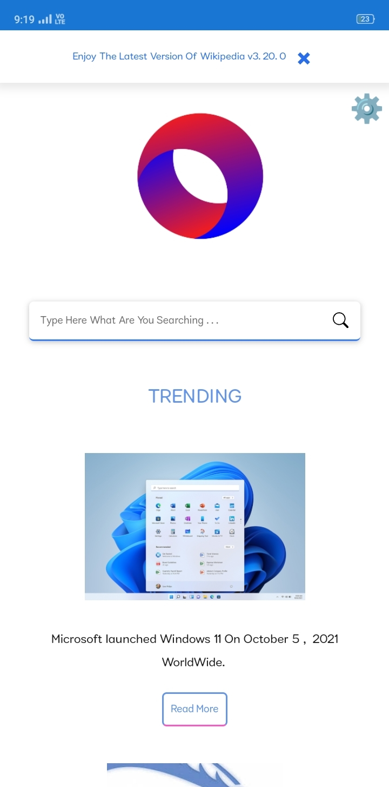

Wikipedia
A secure Encyclopedia provides from Disunic.
Android

# FEATURES
Fast
Wikipedia targets modern systems and leaves the old behind. This allows us to extract large performance gains, so you can surf the web like never before.
Local
Built in languages make switching to your language of choice a breeze. No need to download external packs or weird configuration files!